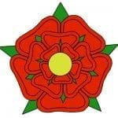

Richard III.
The Wars of the Roses
Obrázky
 Východní Anglie
Východní Anglie  Detailně zpracovaný herní plán
Detailně zpracovaný herní plán
 25 bojových karet, kterých je celkem 9 druhů
25 bojových karet, kterých je celkem 9 druhů  Bloky s vyobrazenými jednotkami za rod Lancasterů
Bloky s vyobrazenými jednotkami za rod Lancasterů
 Yorkové dobývají Londýn
Yorkové dobývají Londýn  Lancasterové opevňují pozice na severu Anglie
Lancasterové opevňují pozice na severu Anglie
 Vysvětlivky k blokům i hernímu plánu
Vysvětlivky k blokům i hernímu plánu  Celkový náhled na hru Richard III - The Wars of the Roses
Celkový náhled na hru Richard III - The Wars of the Roses